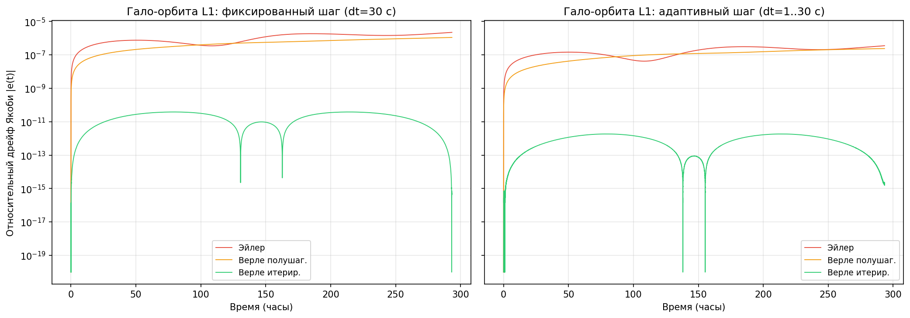
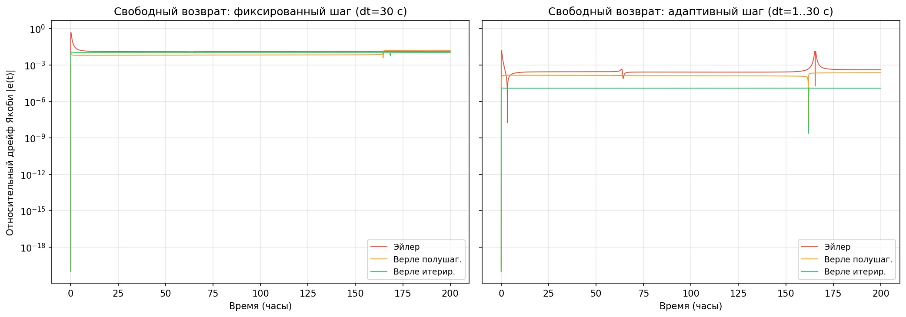
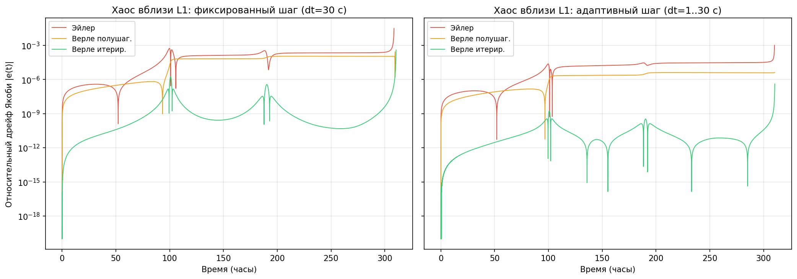
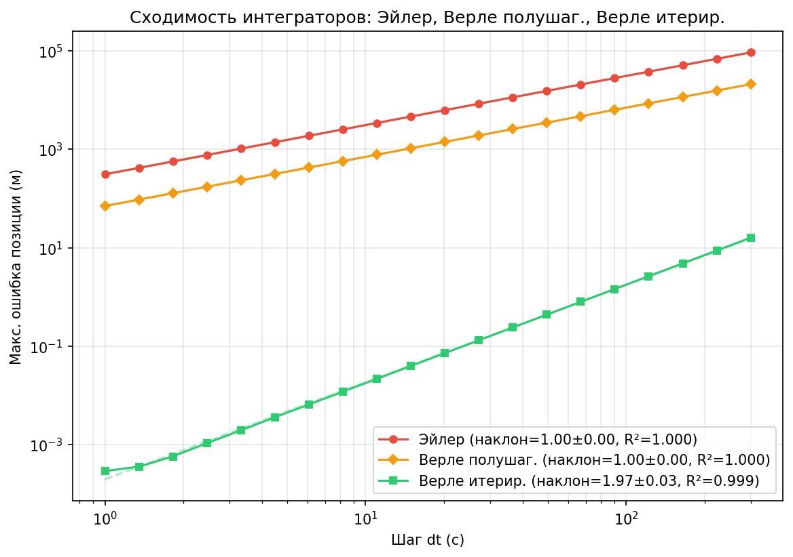
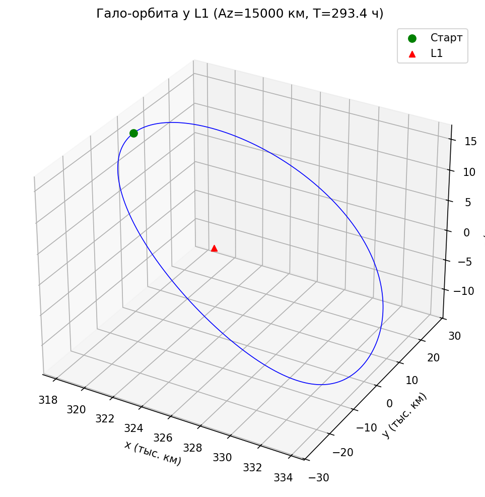
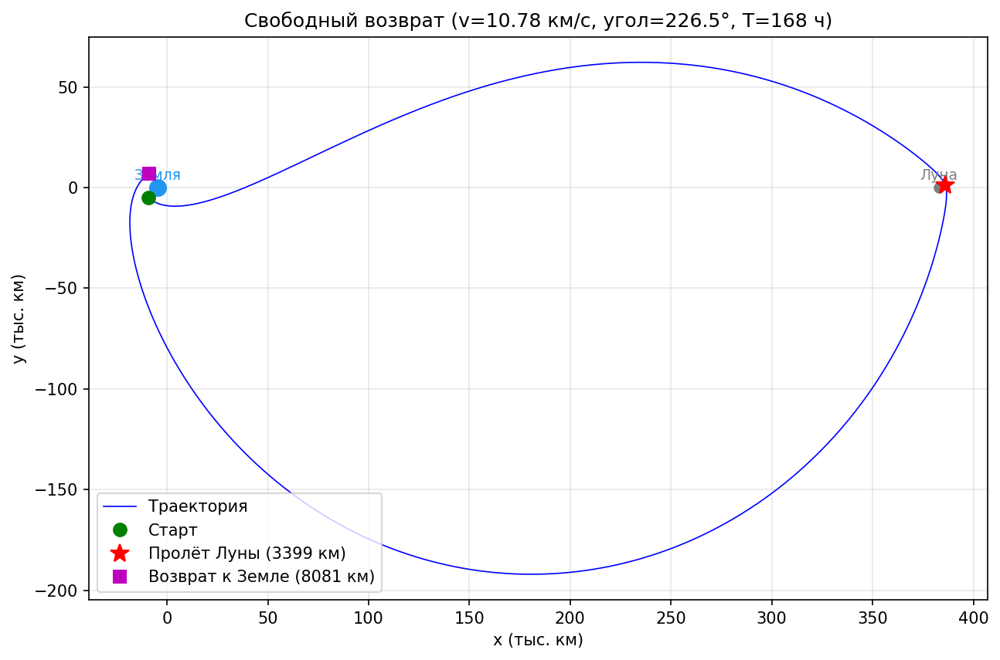
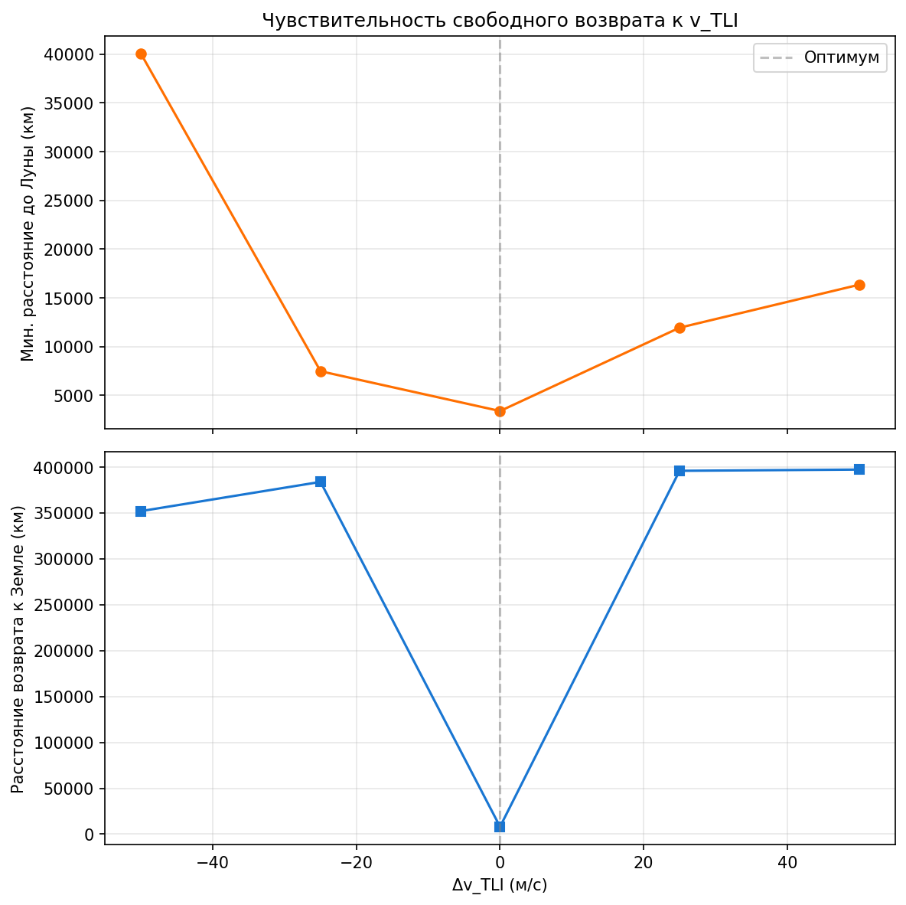
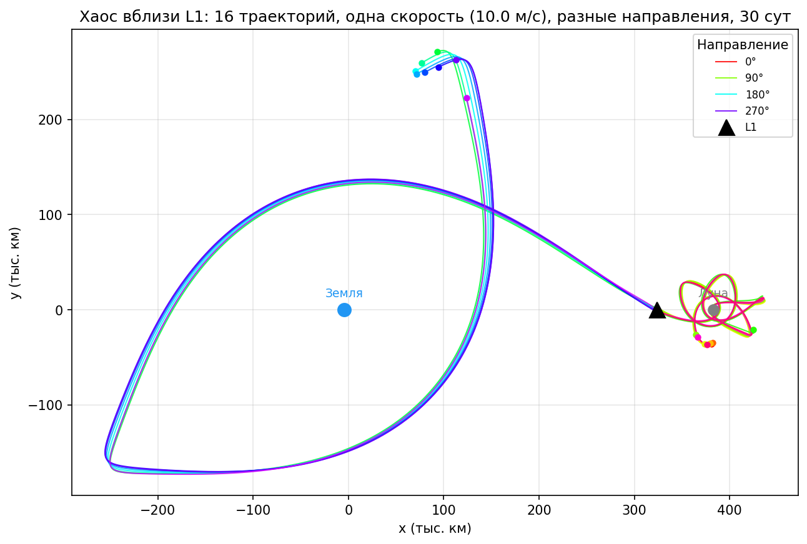
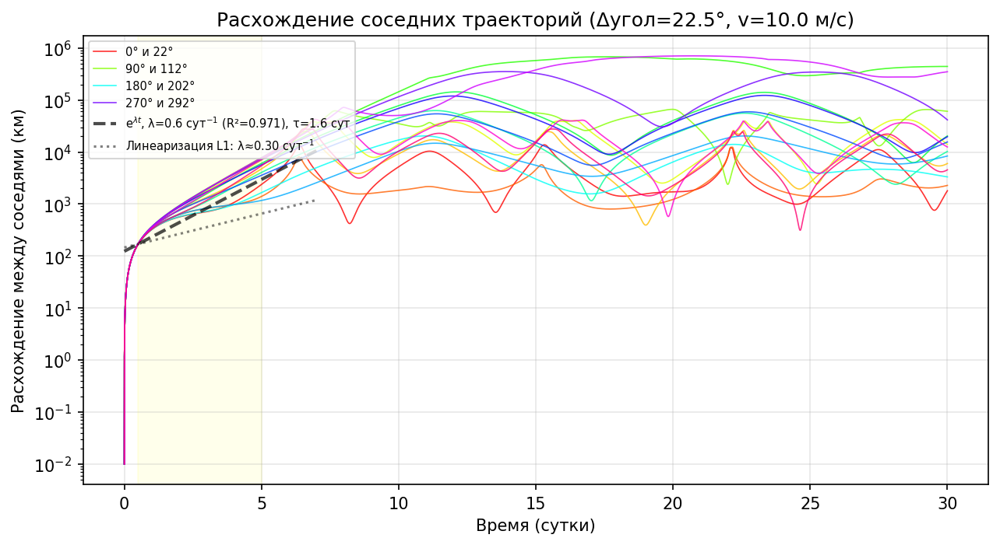
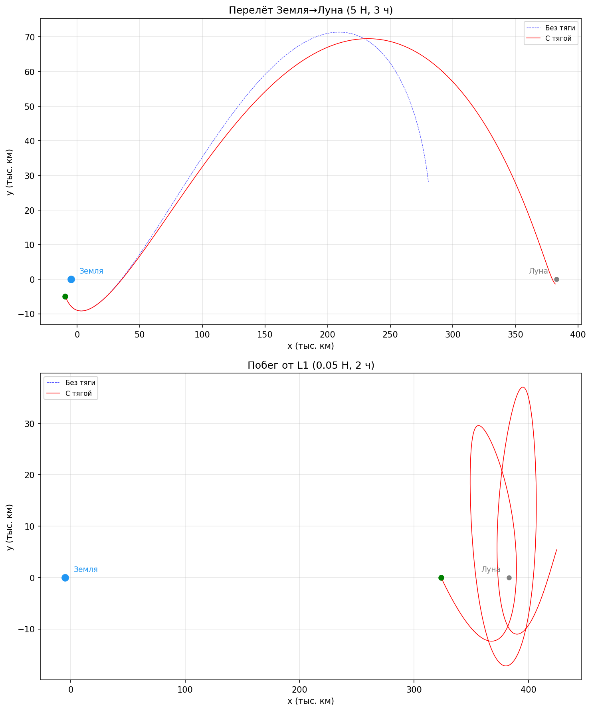

Сравнительный анализ интеграторов и разработка веб-симулятора с поддержкой тяги
Интерактивные приложения
Интерактивная 3D-визуализация траекторий космического аппарата во вращающейся системе координат Земля–Луна. Работает полностью в браузере.
Проверка корректности физической модели методом Эйлера. Графики координат, скорости и ускорения.
Визуализация сходимости к точкам Лагранжа L1–L5 в задаче трёх тел. Исследование положений равновесия.
Документы
Круговая ограниченная задача трёх тел — теоретическое обоснование, описание модели.
Структура выступления
Численные эксперименты
7 численных экспериментов проверяют физическую модель CR3BP и точность интеграторов. Все результаты воспроизводимы из исходного кода.
| Эксперимент | Ключевой результат |
|---|---|
| 01 Дрейф Якоби | Итерированный Верле сохраняет интеграл Якоби с точностью 10−11 — на 5 порядков лучше Эйлера |
| 02 Сходимость (log-log) | Итерированный Верле: наклон 1.97±0.03 (R²=0.999), ошибка 0.13 м при dt=30 с |
| 03 Точки Лагранжа | L1–L5 найдены численно; аналитические приближения дают отн. ошибку 0.4–0.8% |
| 04 Гало-орбита | Периодическая 3D-орбита у L1: период 12.2 дня, ошибка замыкания 3.6 км |
| 05 Свободный возврат | Облёт Луны 3 399 км, возврат 8 081 км; чувствительность: +1 м/с → +89 км у Луны |
| 06 Хаос вблизи L1 | Показатель Ляпунова λ = 0.64 сут−1, горизонт предсказуемости ~2 суток |
| 07 Малая тяга | Δv=0.72 м/с уводит от L1 на 101 000 км; топливо 0.12 кг (0.02% от m₀) |
Интеграл Якоби CJ — единственная сохраняющаяся величина в CR3BP. Его дрейф — прямая мера точности интегратора. Сравниваются 3 интегратора × 2 режима шага на трёх сценариях.



| Конфигурация | Гало-орбита | Своб. возврат | Хаос L1 |
|---|---|---|---|
| Эйлер фикс. | 2.22×10−6 | 4.84×10−1 | 3.12×10−2 |
| Эйлер адапт. | 3.53×10−7 | 1.53×10−2 | 1.04×10−3 |
| Верле полушаг. фикс. | 1.10×10−6 | 1.60×10−2 | 2.70×10−4 |
| Верле полушаг. адапт. | 2.39×10−7 | 2.21×10−4 | 4.15×10−6 |
| Верле итерир. фикс. | 3.83×10−11 | 1.15×10−2 | 3.98×10−4 |
| Верле итерир. адапт. | 1.85×10−12 | 1.27×10−5 | 4.04×10−7 |
Ошибка позиции относительно scipy RK45 при интеграции гало-орбиты 100 ч. Полушаговый Верле деградирует до O(h) из-за силы Кориолиса; итерированный Верле восстанавливает O(h²).

| Интегратор | Наклон | Ошибка при dt=30 с | Отн. ошибка (d/dЗЛ) |
|---|---|---|---|
| Эйлер | 1.00 | 8 400 м | 2.2×10−5 |
| Верле полушаговый | 1.00 | 1 900 м | 4.9×10−6 |
| Верле итерированный | 1.97 | 0.13 м | 3.4×10−10 |
Численное вычисление точек Лагранжа (бисекция / Ньютон) и сравнение с аналитическими приближениями (сфера Хилла).
| Точка | x, км | y, км | Ошибка, км | Отн. ошибка |
|---|---|---|---|---|
| L1 | 323 696 | 0 | 2 649 | 0.82% |
| L2 | 446 531 | 0 | 1 977 | 0.44% |
| L3 | −386 651 | 0 | 2 779 | 0.72% |
| L4 | 188 080 | 332 920 | 2 812 | 0.74% |
| L5 | 188 080 | −332 920 | 2 812 | 0.74% |
Остаточное ускорение в найденных точках: < 10−18 м/с².
Периодическая 3D-орбита: начальное приближение Ричардсона (3-й порядок) + дифференциальная коррекция (стрелковый метод).

| Параметр | Значение |
|---|---|
| Амплитуда Az | 15 000 км |
| Период | 293.4 ч (12.2 дня) |
| Ошибка замыкания | 3.6 км |
| Дрейф Якоби | 3.8 × 10−11 |
Баллистическая траектория типа Apollo-13: старт с LEO, облёт Луны, возврат к Земле без использования двигателя.


| Параметр | Значение |
|---|---|
| Угол старта | 226.5° |
| Скорость TLI (выход на лунную трассу) | 10 779 м/с |
| Пролёт Луны | 3 399 км (t = 63.6 ч) |
| Возврат к Земле | 8 081 км (t = 168.1 ч) |
| Чувствительность: +1 м/с → Δr Луна | ≈ 89 км |
| Чувствительность: +1 м/с → Δr Земля | ≈ 242 км |
16 траекторий стартуют из L1 с одинаковой скоростью 10 м/с, но в разных направлениях. Одна скорость — качественно разные судьбы.


| Параметр | Значение |
|---|---|
| Показатель Ляпунова λ | 0.64 ± 0.16 сут−1 |
| Время Ляпунова τ = 1/λ | 1.6 суток |
| Горизонт предсказуемости | ~2 суток |
Расхождение траекторий экспоненциальное (пунктир на графике — аппроксимация eλt). Часть траекторий уходит к Луне (~380 тыс. км), часть совершает петлю вокруг Земли (~80–120 тыс. км).
Даже малая тяга (<1% начальной скорости) кардинально меняет траекторию в CR3BP.

| Сценарий | Δv | Топливо (хим.) | Результат |
|---|---|---|---|
| Земля → Луна (5 Н, 3 ч) | 108 м/с | 18 кг (3.6%) | Пролёт Луны: 2 494 км |
| Побег от L1 (0.05 Н, 2 ч) | 0.72 м/с | 0.12 кг (0.02%) | Уход на 101 000 км |
| Для сравнения: идеальный перелёт Гомана LEO → Луна требует Δv ≈ 3 134 м/с (топливо 328 кг из 500 кг) | |||
Расход топлива по формуле Циолковского (Isp=300 с, m0=500 кг). Малая тяга — манёвр коррекции, а не замена импульсного перелёта.